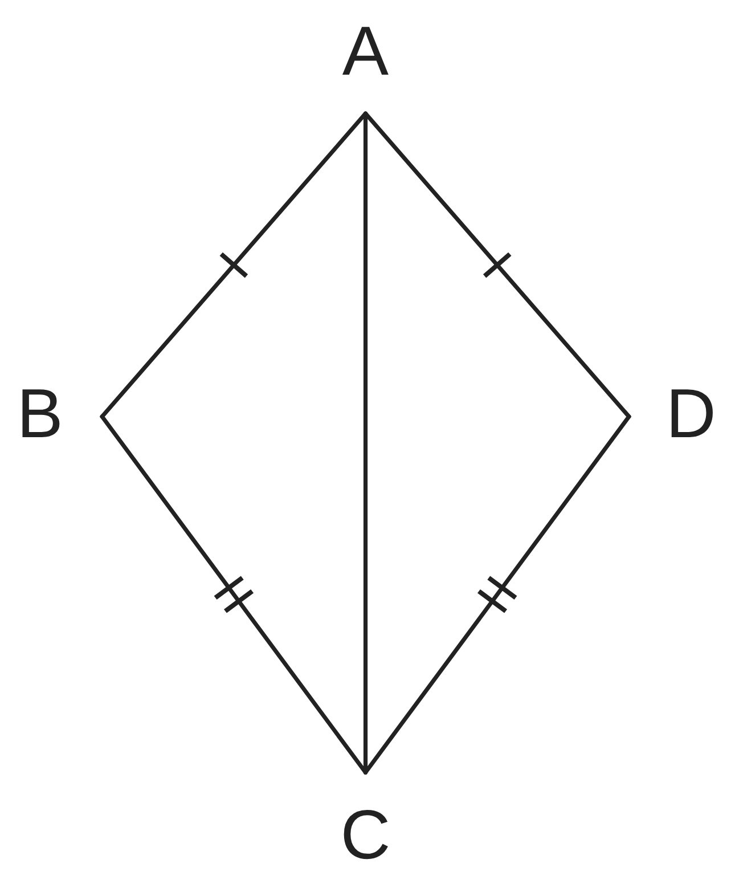
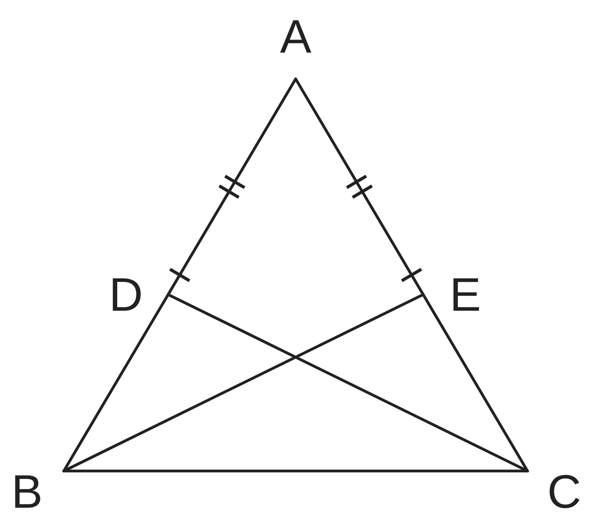
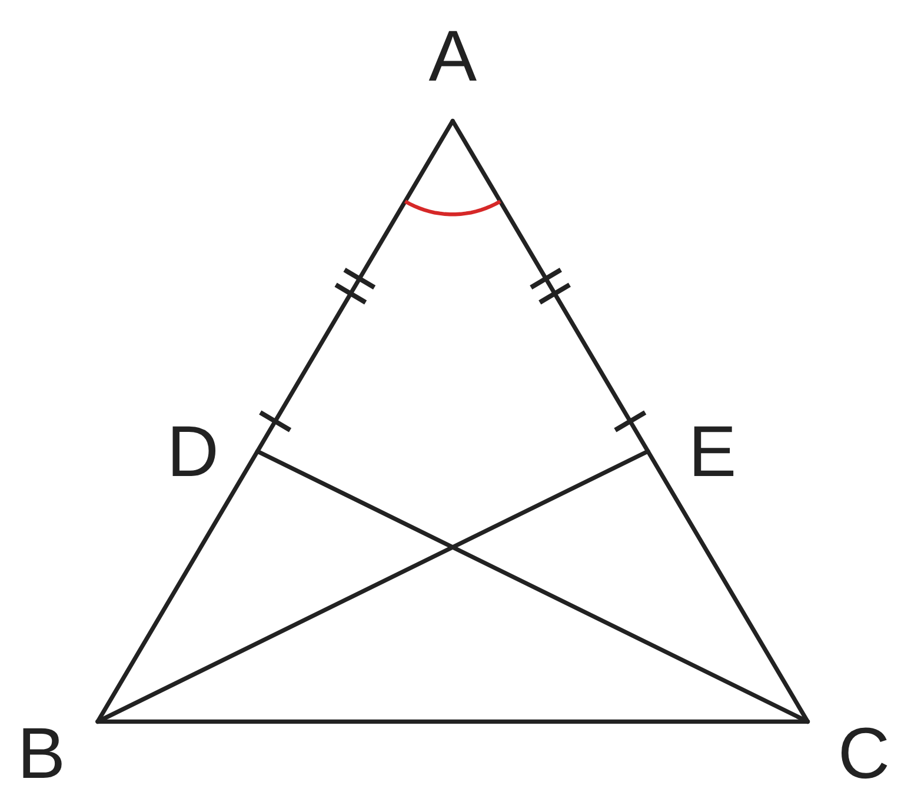
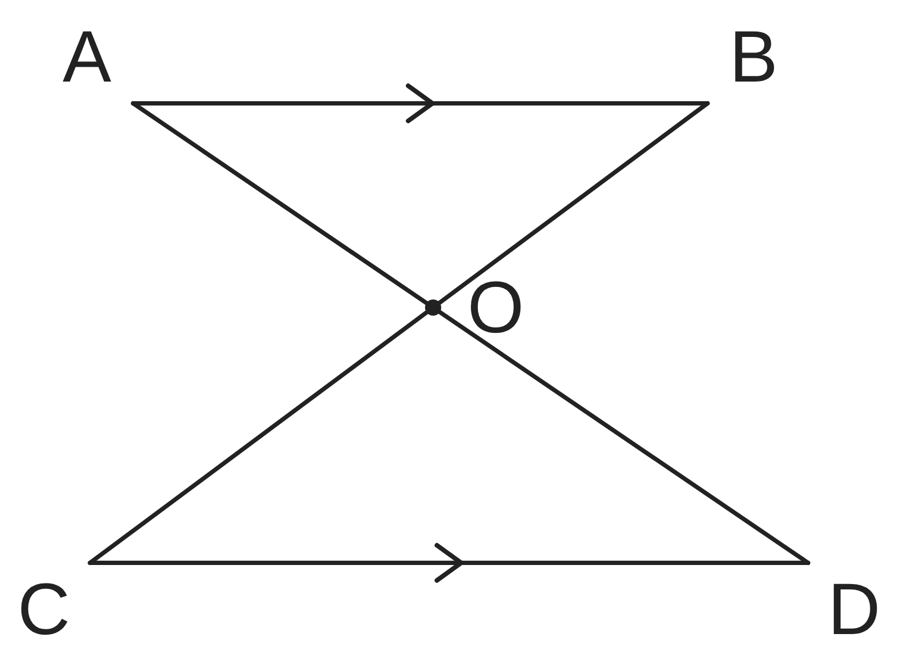

ペア学習
第10時 合同条件を使って、合同な三角形を見つけよう
前の時間の重要語句を、ペアで出し合おう
第9時の重要語句から、1人1問ずつ、言葉を選んで出題する。
聞かれた人は、その言葉の意味を、自分の言葉で言う。
合同条件
3組の辺
2組の辺とその間の角
1組の辺とその両端の角
平行と合同 第10時 合同条件を使って、合同な三角形を見つけよう
めあて
第10時 合同条件を使って、合同な三角形を見つけよう
合同条件を使って、合同な三角形を見つけよう
学習課題
右の図の四角形 ABCD で、
AB＝AD、CB＝CD である。
対角線 AC をひくと、△ABC と △ADC ができる。
2つは合同といえるだろうか。
合同といえるなら、記号 ≡ を使って表し、
使った合同条件も答えよう。

平行と合同 第10時 合同条件を使って、合同な三角形を見つけよう
学習課題のまとめ
第10時 合同条件を使って、合同な三角形を見つけよう
AB＝AD、CB＝CD の四角形 ABCD で、△ABC と △ADC は合同といえるだろうか。
合同な三角形
△ABC≡△ADC
等しいもの
AB＝AD、CB＝CD、AC は共通
使った合同条件
3組の辺が、それぞれ等しい。

平行と合同 第10時 合同条件を使って、合同な三角形を見つけよう
ことば
第10時 合同条件を使って、合同な三角形を見つけよう
2つの三角形は、次のどれかが成り立つとき、合同である。
（三角形の合同条件）
① が、それぞれ等しい。
② と が、それぞれ等しい。
③ と が、それぞれ等しい。
2つの三角形のどちらにもふくまれる辺（角）を、
な辺（角）という。
平行と合同 第10時 合同条件を使って、合同な三角形を見つけよう
ことば
第10時 合同条件を使って、合同な三角形を見つけよう
2つの三角形は、次のどれかが成り立つとき、合同である。
（三角形の合同条件）
① 3組の辺が、それぞれ等しい。
② 2組の辺とその間の角が、それぞれ等しい。
③ 1組の辺とその両端の角が、それぞれ等しい。
2つの三角形のどちらにもふくまれる辺（角）を、
共通な辺（角）という。
平行と合同 第10時 合同条件を使って、合同な三角形を見つけよう
例題
第10時 合同条件を使って、合同な三角形を見つけよう
右の図の △ABC で、辺 AB 上に点 D、
辺 AC 上に点 E があり、
AB＝ 、AD＝ である。
BE、CD をひくとき、合同な三角形を、
記号 ≡ を使って表そう。
また、使った合同条件も答えよう。

【等しいものの見つけ方】図に印をつけて、気づいたことを書こう。
平行と合同 第10時 合同条件を使って、合同な三角形を見つけよう
例題 解答
第10時 合同条件を使って、合同な三角形を見つけよう
△ABE≡△ACD
AB＝AC、AE＝AD、∠A は共通
2組の辺とその間の角が、それぞれ等しい。
等しいものの見つけ方
共通な辺・共通な角のほかに、
次のところに目をつける。
・対頂角は等しい
・平行線の錯角・同位角は等しい

平行と合同 第10時 合同条件を使って、合同な三角形を見つけよう
考えよう
第10時 合同条件を使って、合同な三角形を見つけよう
右の図で、線分 AD と BC が点 O で交わり、AB∥CD である。
△AOB≡△DOC といえるために、
あと何がわかればよいだろう。いくつか見つけよう。
①
図の中で、等しい角を見つけて、
図に同じ印をつけよう。見つけた角を書こう。
②
あと何がわかれば、△AOB≡△DOC
といえるだろう。「わかること」と
「使う合同条件」を、いくつか書こう。
③
友達の見つけた条件と、くらべよう。
気づいたことを書こう。

発展
△ABC と △DEF で、
AB＝DE、∠A＝∠D、
∠C＝∠F のとき、
△ABC≡△DEF
といえるだろうか。
内角の和に目をつけて、
考えよう。
平行と合同 第10時 合同条件を使って、合同な三角形を見つけよう
振り返り
第10時 合同条件を使って、合同な三角形を見つけよう
今日のめあて
合同条件を使って、合同な三角形を見つけよう
合同条件
共通な辺（角）
対頂角
錯角
今日わかったことを、ペアで1つずつ言い合おう。
ワークシートと演習プリントを出そう。（未完成でも出す）
平行と合同 第10時 合同条件を使って、合同な三角形を見つけよう